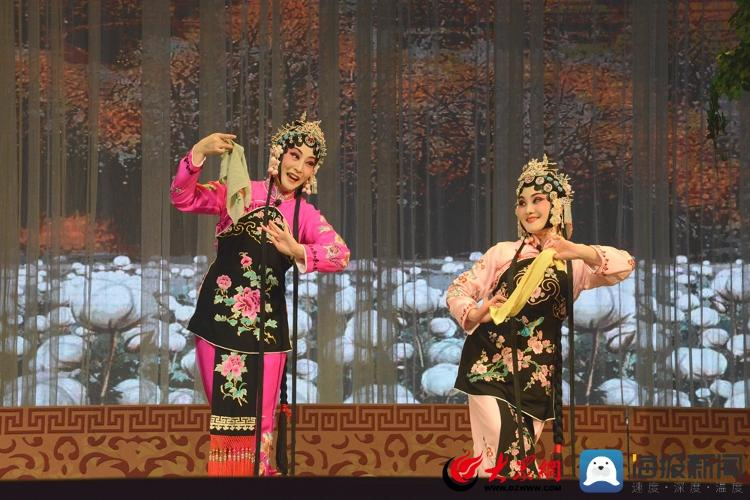
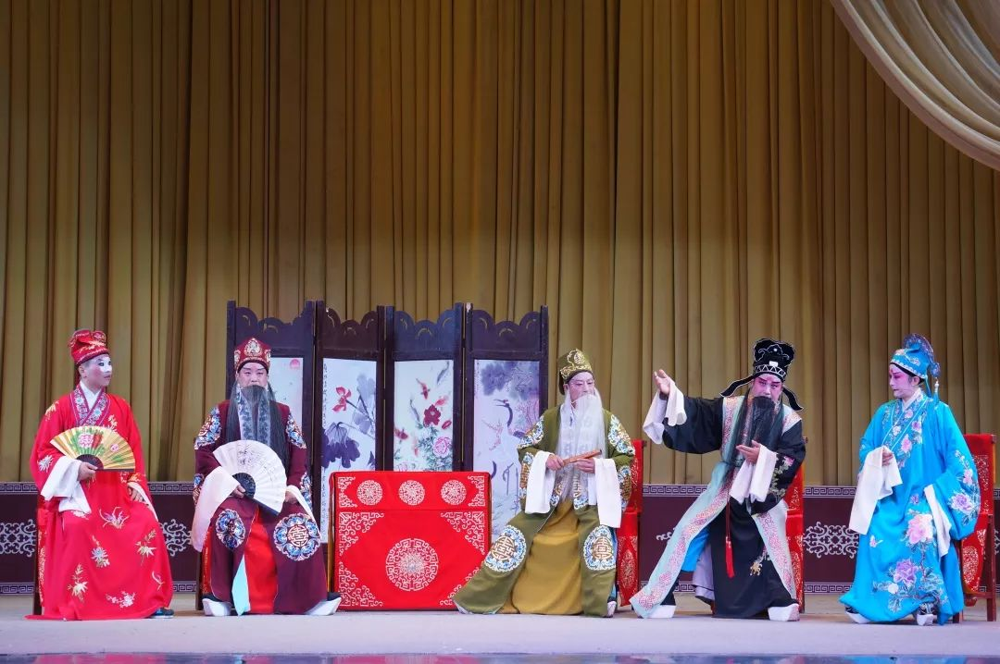

经典剧目
柳琴戏历史悠久，剧目丰富，题材广泛，既有传统历史剧，也有现代生活剧

拾棉花
该剧讲述了农村姑娘在棉花丰收季节的劳动生活，展现了劳动人民的智慧和勤劳，是柳琴戏的代表作之一。
传统剧目喝面叶
一部富有生活气息的小戏，通过夫妻间的小矛盾展现农村生活的乐趣，唱腔优美，表演生动。
生活喜剧

灵堂花烛
传统悲情剧目，讲述了一个感人至深的爱情故事，展现了柳琴戏在表现悲剧情感方面的独特魅力。
历史悲剧
状元打更
讽刺喜剧，落魄状元被迫打更，讽刺世态炎凉与科举虚妄，最终善恶有报团圆收场，融市井幽默与批判于一体。
讽刺喜剧
皮秀英四告
公案剧，弱女子皮秀英四次击鼓鸣冤，对抗官场黑暗与强权压迫，以高亢悲腔塑造坚韧女性形象，揭露司法不公。
公案剧
闹书房
书生夜读遇狐仙幻化少女纠缠，人妖殊途引发荒诞闹剧。以谐谑手法讽刺迂腐书生，讴歌真情超越礼教，唱腔轻快融入民间小调。
奇幻爱情
金镯玉环记
才子佳人因金镯玉环定情，历经战乱信物错位，最终凭信物破镜重圆。歌颂忠贞守信，情节跌宕贯穿悲欢离合，凸显“信物”的象征力量。
姻缘传奇
金玉奴
乞丐之女金玉奴雪夜救书生莫稽，反遭高中后的夫君推坠江中。包公智审铡负心郎，揭露封建等级之恶，以“棒打薄情”强化善恶报应主题。
公案悲剧小姑贤
家庭伦理剧，通过婆媳、姑嫂关系展现传统家庭伦理，宣扬孝道和家庭和睦的传统美德。
家庭伦理